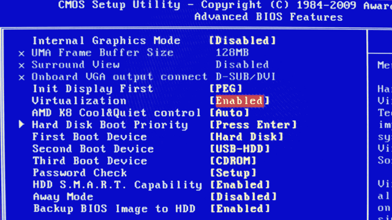

| Rob Daniels | |
| http://www.danielscorporation.com | |
| https://github.com/rdaniels | |
| @rdaniels61 | |
Vagrant is free and open-source software for creating and configuring virtual development environments. It can be considered a wrapper around VirtualBox and configuration management software such as Chef, Salt and Puppet.
Match Dev & Production Environment
Share Dev Setup with other Programmers
OK to Break the Server
Running Ruby on Windows
Enable Virtualization in BIOS

GitBash: https://openhatch.org/missions/windows-setup/
Console2: http://sourceforge.net/projects/console/
VirtualBox: https://www.virtualbox.org/wiki/Downloads
Vagrant: http://downloads.vagrantup.com/
http://vagrantbox.es/ available vagrant boxes
vagrant box add precise64 http://files.vagrantup.com/precise64.box
vagrant init
VAGRANTFILE_API_VERSION = "2"
Vagrant.configure(VAGRANTFILE_API_VERSION) do |config|
config.vm.hostname = "my-project"
config.vm.box = "precise64"
config.vm.network :forwarded_port, guest: 80, host: 4567
config.vm.network :forwarded_port, guest: 3000, host: 3000
end
vagrant up
vagrant ssh
vagrant package
vagrant box add precise64_with_rvm package.box
vagrant box list
vagrant box remove precise64_final
vagrant halt
vagrant destory --force
Deploying Rails ©2012 Burns & Copeland
| Rob Daniels | |
| http://www.danielscorporation.com | |
| https://github.com/rdaniels | |
| @rdaniels61 | |